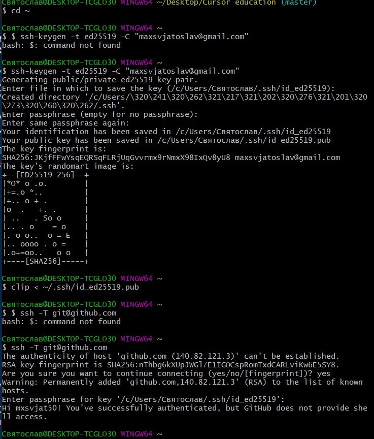

Git notes
Basic
- git config --global user.name blabla - встановлює ім'я користувача.
- git config --global user.email blabal@bla - встановлює адресу електронної скриньки користувача.
- git init - ініціює пустий репозиторій в поточній директорії.
- git status - перечисляє всі нові або змінені файли,які не синхронізовані.
- git add - додаємо файли в коміт. Зазвичай використовується «.» або «*» для додавання усіх файлів. Щоб додати один файл – вказуємо його ім'я та розширення.
- git commit -m - виконуємо «коміт» змін. Тобто, вказуємо, що поточний зліпок проекту потрібно зберегти.
- git log - історія коммітів для поточної гілки.
- git checkout - переключається на вибрану гілку і оновлює робочу директорію до її стану.
- git branch - список іменованих гілок з показом вибраної гілки.
- git push - відправляємо в репозиторій наші зліпки проекту.
- git pull - команда для отримання змін з репозиторію.
- git merge - вносить зміни з гілки віддаленого репозиторію в поточну гілку локального.
- git clone - скачує репозиторій разом із всією історією його змін.
Що таке .gitignore файл?
Використовується для того, щоб приховати файли та папки від git.
Advanced
- git revert - безпечний спосіб скасувати операцію без втрати історії коммітiв. Команда скасовує дії минулих коммітiв , створюючи новий, який містить всі скасовані зміни. Ця команда корисна, коли ви вже запушили зміни в віддалений репозиторій, так як вона зберігає недоторканим вихідний комміт.
- git reset - відміняє всі комміти після заданого, залишаючи всі зміни в робочій директорії.Вона має три основні форми виклику, --soft, --mixed, --hard.
- git rebase - вносить зміни вказаної гілки в поточну гілку.
- git cherry-pick - використовується для перенесення окремих коммітів з однієї гілки в іншу.
- git stash - тимчасово зберігає всі незафіксовані зміни відслідковуваних файлів.
Підключення через SSH
